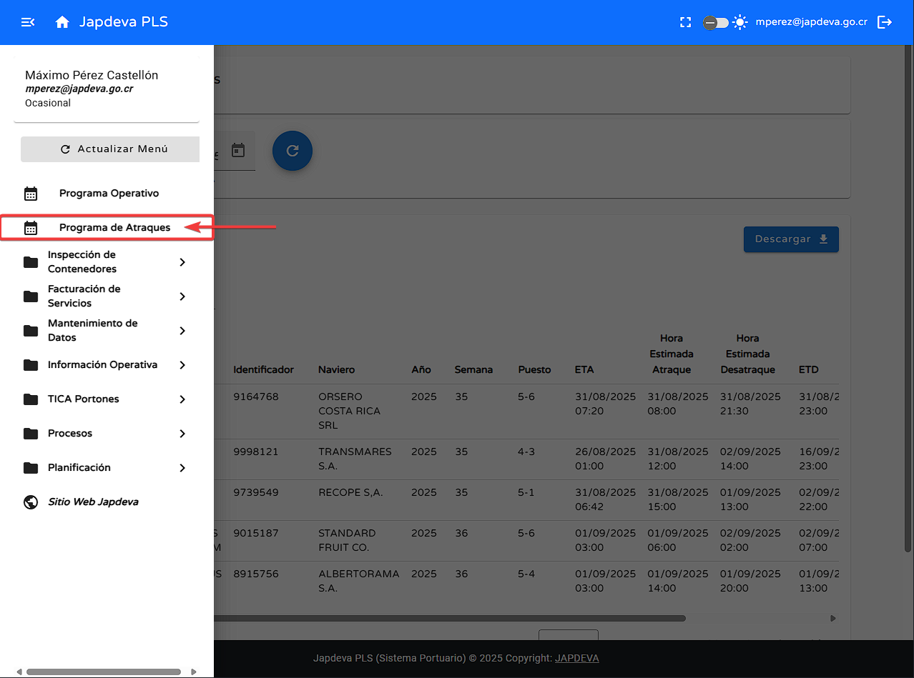
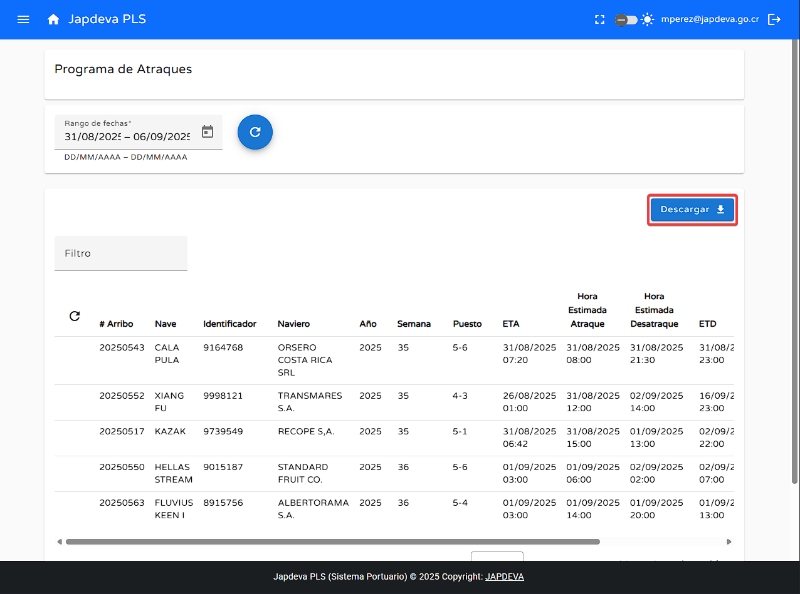
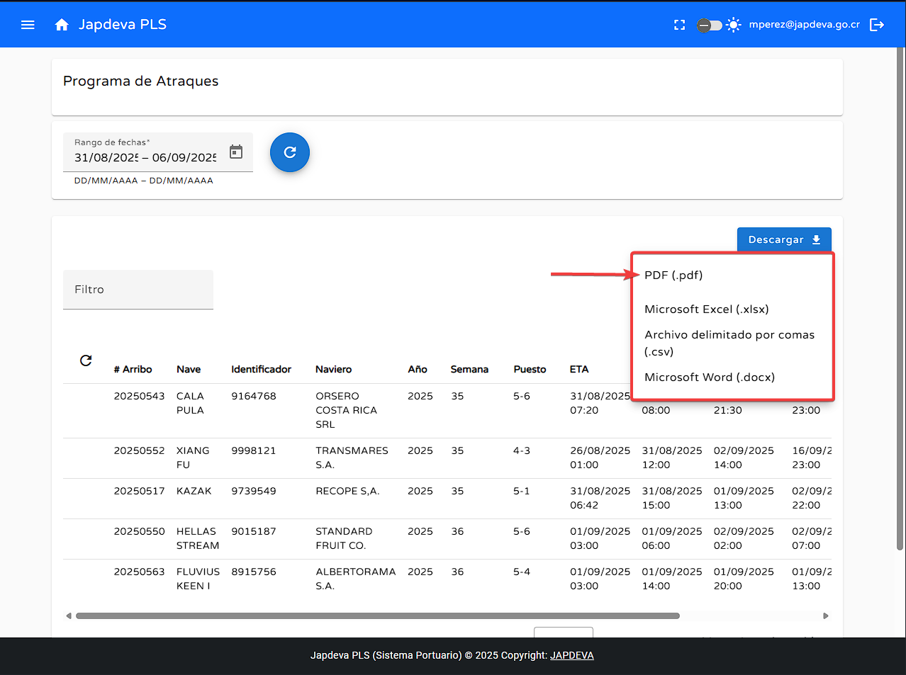
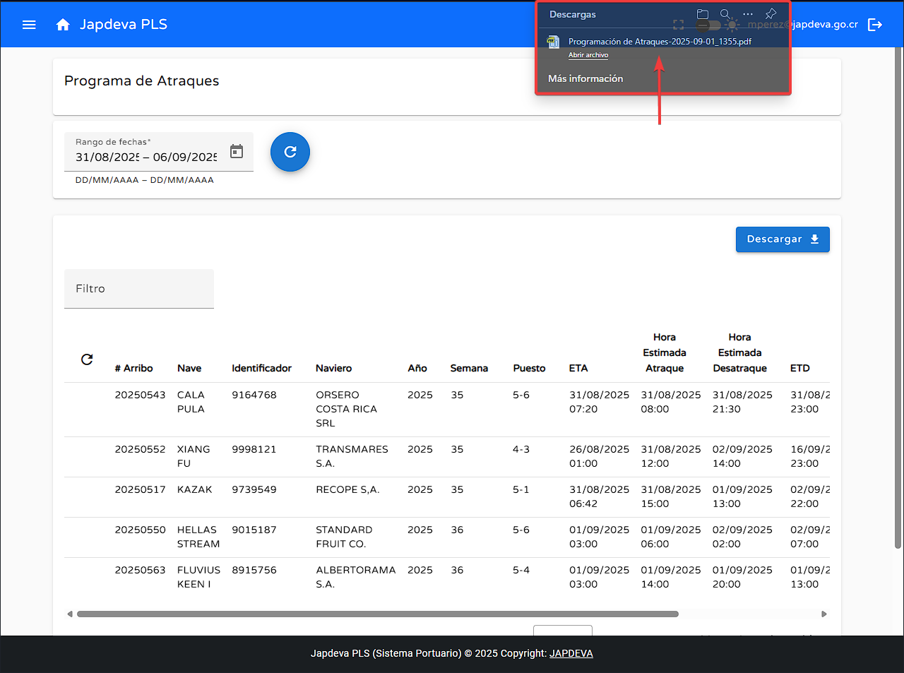
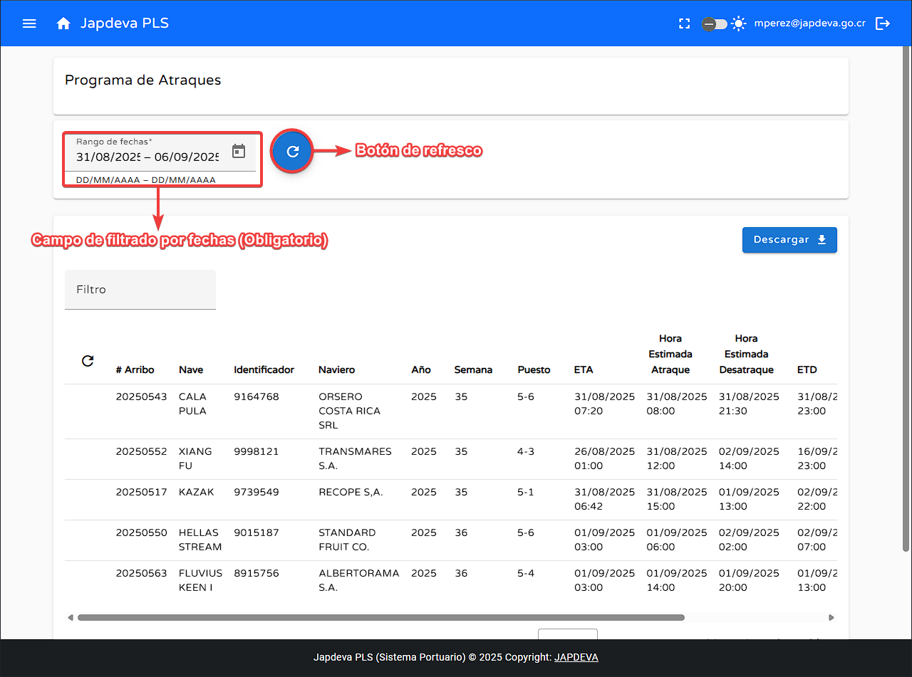
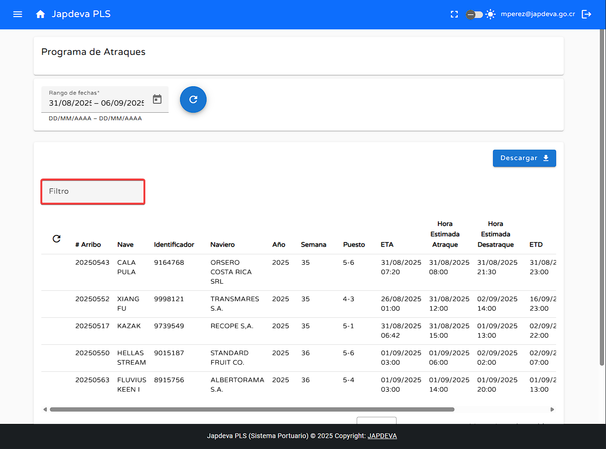
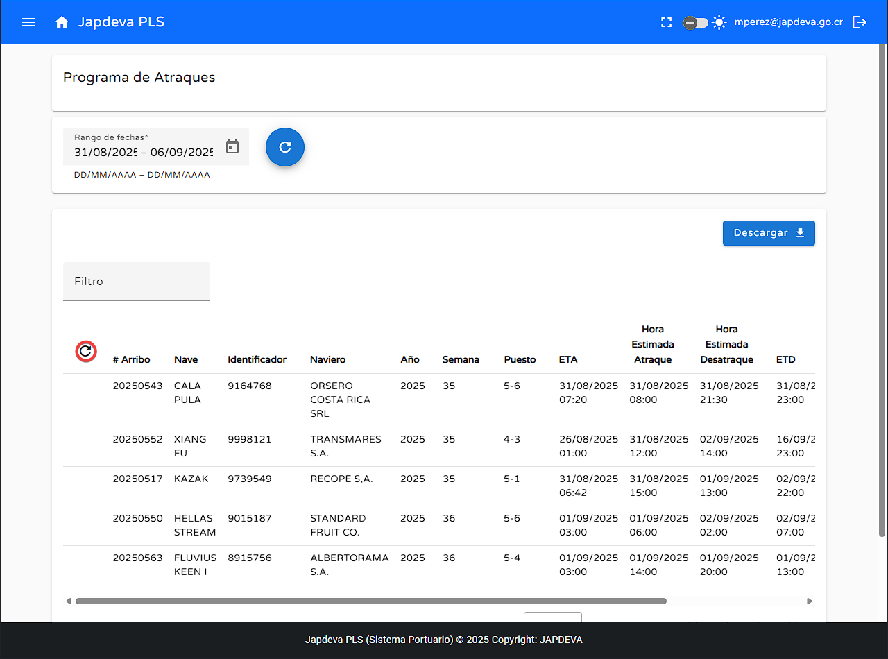

Bienvenido a la guía de usuario para la pantalla Programa de Atraques del sistema PLS. Esta
guía está diseñada para ayudarte a utilizar y comprender de forma sencilla y directa las funcionalidades que
ofrece esta pantalla.
1. Introducción
La pantalla de Programa de Atraques se encuentra en el menú de inicio como un menú directo
con el mismo nombre de la pantalla y su objetivo principal es presentar de manera ordenada y sencilla toda
la información relevante a los atraques de embarcaciones en cierta ventana de tiempo.

Consejo: Esta guía está diseñada para ser leída en orden, pero puedes saltar a las
secciones que necesites usando el menú de contenido.
2. Funciones principales
1
Función básica
Para realizar la función principal:
Haz clic en Descargar
Seleccionamos en qué tipo de archivo deseamos realizar la descarga del programa de atraques y se
iniciara la descarga del mismo inmediatamente.



2
Visualización de información en pantalla Programa de Atraques
Como se puede observar de primera mano la pantalla actual solamente posee información visual la cual no
puede ser modificada mediante esta ya que dicha información es recopilada de otras pantallas del sistema
aunque aún así posee funciones de filtrado y búsqueda básica.
La primera función básica que podemos encontrar en esta pantalla sería la filtración de información
por rango de fechas donde se deben de colocar tanto fecha de inicio como fecha de fin para luego
darle clic al botón de refrescamiento.

La segunda función básica que podemos usar en la pantalla actual es la de búsqueda por cualquier
campo de información que se encuentre en el programa de atraques reflejado en la tabla de datos.

Dentro de la misma pantalla podemos encontrar la opción de refrescar la tabla de datos a los más
recientes posibles mediante el botón de refrescar que se ubica en la esquina superior izquierda de
la tabla.

Por último en la pantalla programa de atraques podemos ubicar una tabla de datos ue refleja toda la
información necesaria para el manejo de atraques de embarcaciones, siendo estos datos los siguientes
siendo leídos (De izquierda a derecha)
# de arribo: Identificador único brindado por la empresa a las diversas
embarcaciones que se compone por el año y un número de consecutivo.
Nave: Nombre de la embarcación registrado en el sistema.
Identificador: Número de identificación a nivel internacional que posee la
embarcación, por lo general se usa el IMO, pero se puede hacer uso de
cualquiera siempre y cuando cumpla con las normas internacionales.
Naviero: Nombre de la empresa que posee la embarcación.
Año: Año en que se realizó el atraque.
Semana: Número de semana en la que se realizó el atraque. (1 a 52)
Puesto: Número de puesto o ventana en la que realizó el atraque.
E.T.A: Reconocido como E.T.A (Estimated Time of Arrival) es la hora
esperada de llegada de la embarcación a bahía.
Hora estimada de atraque: Hora aproximada en la que se realizó el atraque.
Hora estimada desatraque: Hora estimada para que el navio desatraque del puesto
en puerto.
E.T.D: (Estimated Time of Departure) es la hora estimada de salida
de la embarcación.
Calado proyectado: Profundidad máxima necesaria para que el barco pueda
maniobrar libremente en el agua.
Estado: Refleja de manera clara el estado en el cual se encuentra la
embarcación al momento de visualizar la información en la pantalla